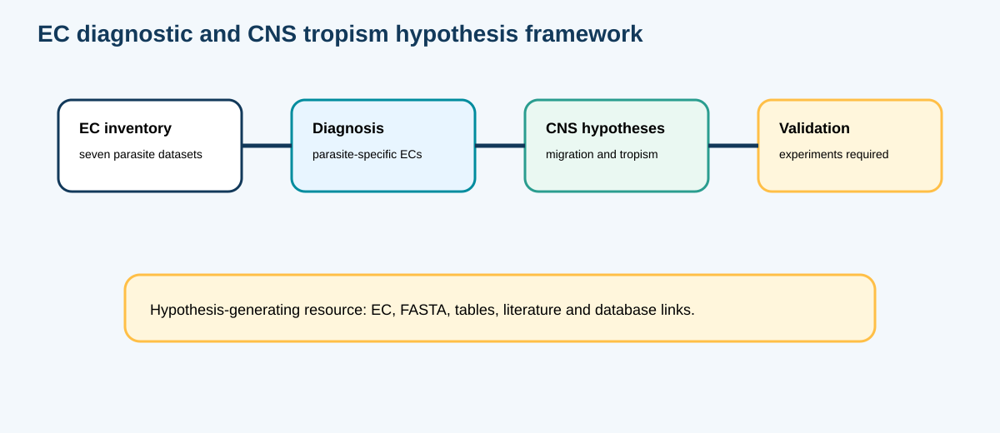

Databiomics · public research atlas · release 2026-07-24
Non-homologous isofunctional enzyme candidates in neurologically relevant helminths
A complete, auditable companion resource for the manuscript, integrating AnEnPi-derived EC/NISE analyses, parasite–human counter-screening, diagnostic-marker hypotheses, lifecycle-aware intervention hypotheses, figures, tables, FASTA sequences, scripts, software environment and validation records.
Authors: Leandro de Mattos Pereira, Carlos Graeff-Teixeira and Alessandra Loureiro Morassutti.
Study overview
Abstract and analytical scope
The resource evaluates enzyme activities and candidate non-homologous isofunctional or analogous enzymes across neurologically relevant helminths. EC-specific protein partitions and within-activity sequence comparisons support parasite–parasite and parasite–human analyses. Direct fold-supported parasite–human NISE comparisons cover Angiostrongylus cantonensis, Echinococcus granulosus, E. multilocularis, Taenia solium, Onchocerca volvulus and Toxocara canis. A. costaricensis is retained as a separate comparative layer rather than being inserted into the direct parasite–human NISE matrix.
Human-inclusive marker screen
Current release findings
Interpretation safeguard: “PASS_WITHIN_PROVIDED_PROTEOMES” is not evidence of global uniqueness or a validated clinical diagnostic marker. External database-wide screening, complete functional/domain reannotation, primer/probe design and laboratory or clinical validation remain necessary.
Publication figures
Main atlas figures

Figure 1 · Reproducible EC/NISE workflow

Figure 2 · Diagnostic and intervention hypotheses
Figure 3 · Shared human–parasite NISE heatmap
Versioned figure and source table are organized in the public repository release.
Figure 4 · Parasite-specific NISE heatmap
Versioned figure and source table are organized in the public repository release.
Figure 5 · Unique complete ECs by dataset
Versioned figure and source table are organized in the public repository release.
Figure 6 · Functional-class summary
Versioned figure and source table are organized in the public repository release.
Figure 7 · Lifecycle-aware intervention classes
Versioned figure and source table are organized in the public repository release.
Figure 8 · Lifecycle overview and species panels
Overview plus individual panels for seven parasite datasets.
Figure 9 · Sequence-screened orphan-EC markers
Human-inclusive candidate filtering with retained, rejected and pending classifications.
Versioned release
Downloads and reproducibility
| Resource | Contents | Access |
|---|---|---|
| Manuscript package | Journal and preprint DOCX/PDF versions | Open |
| Main tables | Tables 1–16 in editable CSV format | Open |
| Marker-screen outputs | Species EC presence, sequence validation, best hits, retained and rejected candidates | Open |
| FASTA sequences | All candidates, retained sequences and rejected/pending sequences | Open |
| Scripts and environment | Reproduction scripts, environment definition, requirements and software versions | Open repository |
| Checksums and validation | Manifest, SHA-256 checksums and validation reports | Open repository |
Minimal reproduction command
conda env create -f 06_environment/environment.yml
conda activate nise-targets-final
bash run_all.shResponsible interpretation
Limitations and validation status
- The current marker screen is restricted to the supplied parasite proteomes and human dataset.
- Global nr, UniProtKB and RefSeq sequence-wide confirmation remains incomplete.
- Candidate ECs and proteins are computational hypotheses, not diagnostic tests or approved drug targets.
- Experimental enzymology, structural validation, primer/probe design, analytical validation and clinical validation are outside the current release.
- Missing evidence is retained as missing and is not converted to zero.
Citation
How to cite
Pereira, L. de M.; Graeff-Teixeira, C.; Morassutti, A. L. Non-homologous isofunctional enzyme candidates in neurologically relevant helminths. Manuscript and Databiomics public research resource, 2026.